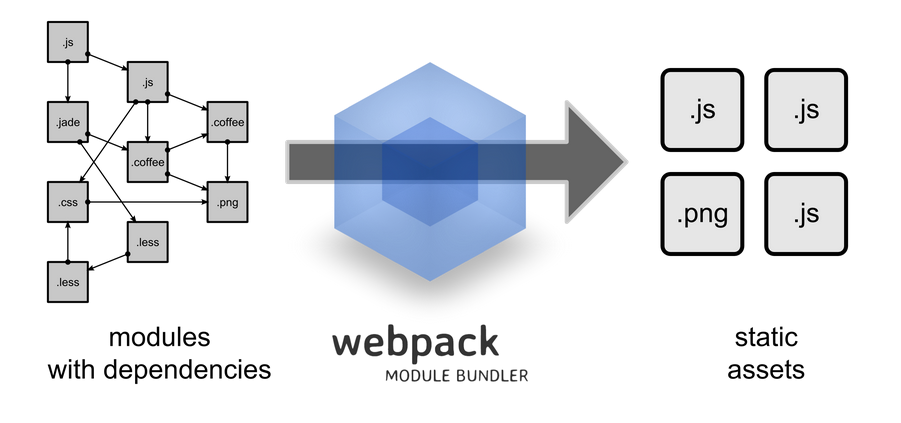
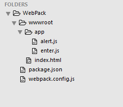
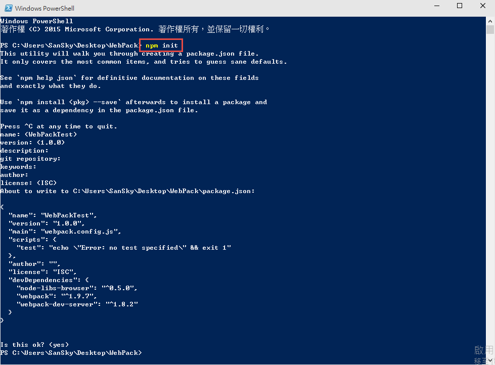
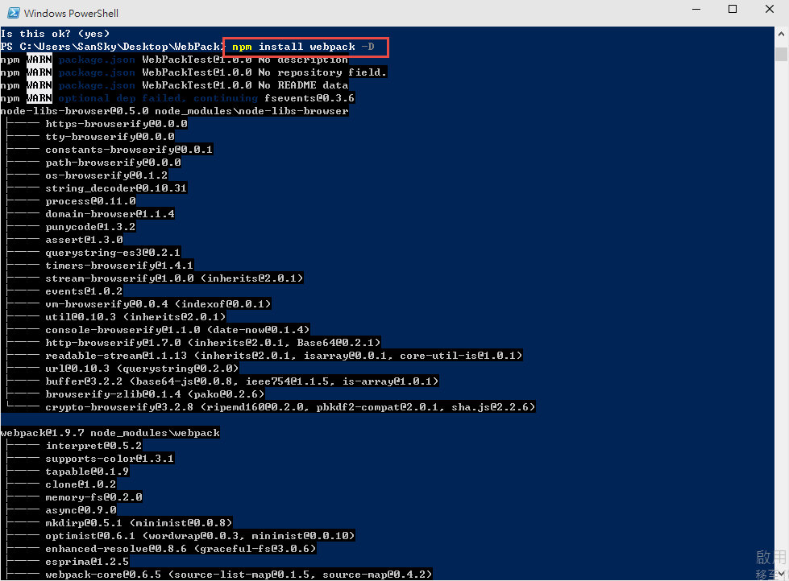
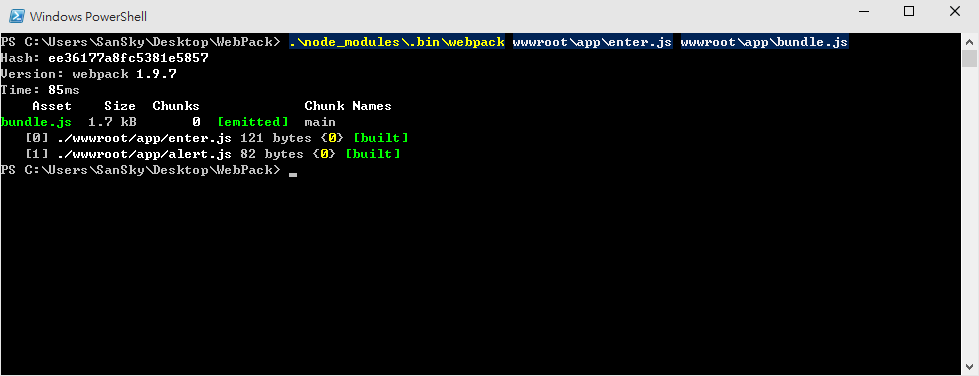
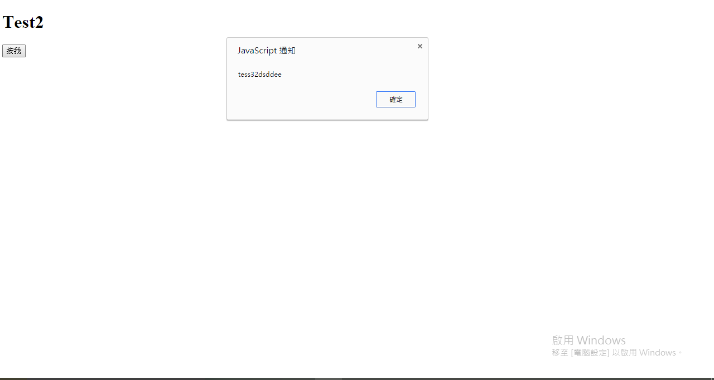

大家都知道前端的應用與套件變化很快，但是到底有多快?我們看到了 Webpack 就會知道。
在2014年底的時候，JSDC 還火熱的請來 browserify 的作者來到台灣演講，然後微軟年底還用 grunt 當作預設的流程引擎，到了今年年初，微軟就已經把 grunt 改成 gulp 當作流程引擎了，而接近年中的時候，Web Conf 已經有人介紹了 Webpack …
既然提到了 browserify 和 gulp ，大家應該就可以猜到 Webpack 是做什麼用的；我們先回顧一下 browserify ，當初設計 browserify 是為了將 Node.js 的 module 用在 browser 上，後來，browserify 變成了一個當紅的 module 管理方案，而 gulp 則專心處理建置的流程，舉例來說，我們可以透過 gulp 來啟動流程，然後在流程中，透過 browserify 將一堆的 js 打包成一個 js 檔案，接下來，繼續把 js 給 min 化，甚至產生 map 檔案；當然 gulp 處了做這些事情外，還可以繼續整合測試，或是壓縮圖檔，css ，最後在自動的去觸發動作，讓瀏覽器自動更新…
Webpack !?
那 Webpack 呢?? 他非常的強大，他除了擁有 browserify 的功能，一樣可以管理 module 的相依性外，他還支援 es6 的 module架構、AMD 和 CommonJS 的相依性格式，除此之外，他還可以輕易地切割打包好的 js ，處理 css 的相依性等等外，還擁有瀏覽器自動更新功能，簡單的說，透過 Webpack ，已經可以處理 browserify 的事情，並且還包了 gulp 前半段的流程了，最酷的，他甚至還擁有 Hot Loading，嗯，那甚麼是 Hot Loading ??，簡單的說，他可以不重整瀏覽器的情況下，自動更新 module ，讓你即時就擁有最新的 js 效果!! 想像一下，當你寫 React.js 的時候，改變了元件，不用再重整頁面，不用再擔心填入的表單資料不見，馬上就可以看到最新的畫面與邏輯，超酷的!!
但小弟也必須說，目前 Hot Loading 與 React、 CSS 等等的載入器搭配最好，如果是 AngularJS，就會需要手工去做設定，但相信這個部分，未來一定會有神人寫出好用的東西!!
而且不管怎樣，就算沒有Hot Loading，光是Live Loading 也綽綽有餘了!!
( 請注意，webpack 的確可以減輕原本我們設定 gulp 流程的一小部分，但不代表 webpack 可以取代整個 gulp，很大的情況下，我們還是需要搭配 gulp 來整合整個開發流程 )

專案結構
我們一開始就先不要開Visual Studio了，簡單一點，結構如下，我們會把靜態的檔案放到wwwroot的目錄底下，未來ASP.NET 5也是會採用類似的架構，而底下的app目錄，則是用來存放前端的應用程式。

安裝 Webpack
在安裝 Webpack 前，我們先使用
1 | npm init |
來建立一個新的 package.json ，用來管理所有 npm 套件。

接下來，我們可以直接使用底下的命令安裝到global，這樣何時何地都能呼叫到 Webpack 指令。
1 | npm install webpack -g |
或是在你想要使用的專案底下，下以下指令，後續的範例，我們會直接安裝在專案底下。
1 | npm install webpack -D |

撰寫 index.html
底下是一個簡單到不行的 html ，畢竟重點不是 html ；大家需要關注的是 bundle.js 這邊，未來，我們會把許多隻的 js 檔案，統一綁成一個 bundle.js ，所以我們這邊就預先寫好這段。
1 |
|
撰寫 enter.js
我們的 js 也很簡單，這邊利用了 Node.js 的 module，第一行的時候會載入 module ，而這個 module下一段會寫到，接下來，針對 btn 註冊一個事件，當按下去的時候，會呼叫 alert 這個方法。
1 | var t = require('./alert') |
撰寫 alert module
這邊就是定義了 alert這個方法，呼叫的時候，跳出來 tess32dsdde 。
1 | module.exports ={ |
執行 Webpack
是低，範例就是這樣的簡單，接下來，我們到命令列的地方，輸入以下指令；因為我們webpack沒有安裝在global，所以必須去 bin 底下才找的到指令，如果大家是安裝在 globa 那就可以直接下 webpack了。
而底下的指令，第一個參數 wwwroot\app\enter.js 是你應用程式的進入點，wwwroot\app\bundle.js 則是輸出的檔案與位置。
1 | .\node_modules\.bin\webpack wwwroot\app\enter.js wwwroot\app\bundle.js |
完成後，可以從下圖看到，它會自動處理相依性。

測試網頁
完成後，我們直接打開 index.html 檔案，就可以看到如下的效果了。

參考資料
- https://leanpub.com/survivejs_webpack/read
- http://webpack.github.io/docs/
- http://segmentfault.com/a/1190000002551952
- https://github.com/petehunt/webpack-howto
- http://segmentfault.com/a/1190000002552008
- https://medium.com/html-test/webpack-%E7%9A%84%E5%9F%BA%E6%9C%AC%E5%B7%A5%E4%BD%9C%E6%B5%81%E7%A8%8B-585f2bc952b9